Німеччина - батьківщина свинячих сосисок та пива, смішних шортів з підтяжками та автобанів. Однак це лише перші
асоціації. Наприклад, Берлін - одне з найбільш приголомшливих міст континенту з тих пір, як позбувся стіни. Вражаючі та незабутні краєвиди, магічні панорами зазубрених та покритих снігом вершин, що
височіють над квітучими луками баварських Альп, бурхливі річки, що протікають містами, химерні скельні утворення, поля зрілої пшениці — все це частини ковдри під назвою «природа Німеччини».
Німеччина – одна з найпопулярніших європейських країн у більшості туристів.
Країна пропонує величезну різноманітність визначних пам'яток, включаючи жваві міста, красиву природу та забавні розваги. Країною легко подорожувати з високорозвиненою залізничною системою, і єдина складність полягає саме у виборі напрямку.
Таким чином, пропоную вам вивчити найгарніші міста Німеччини, які обов'язково варто включити до свого списку мандрівника.
Берлін
Як Ейфелева вежа в Парижі, Колізей у Римі чи Тауер у Лондоні, так Бранденбурзькі ворота є символом та візитною карткою Берліна.
Це найвідоміша берлінська визначна пам'ятка, з якої почалося будівництво в так званому берлінському класицистичному стилі.
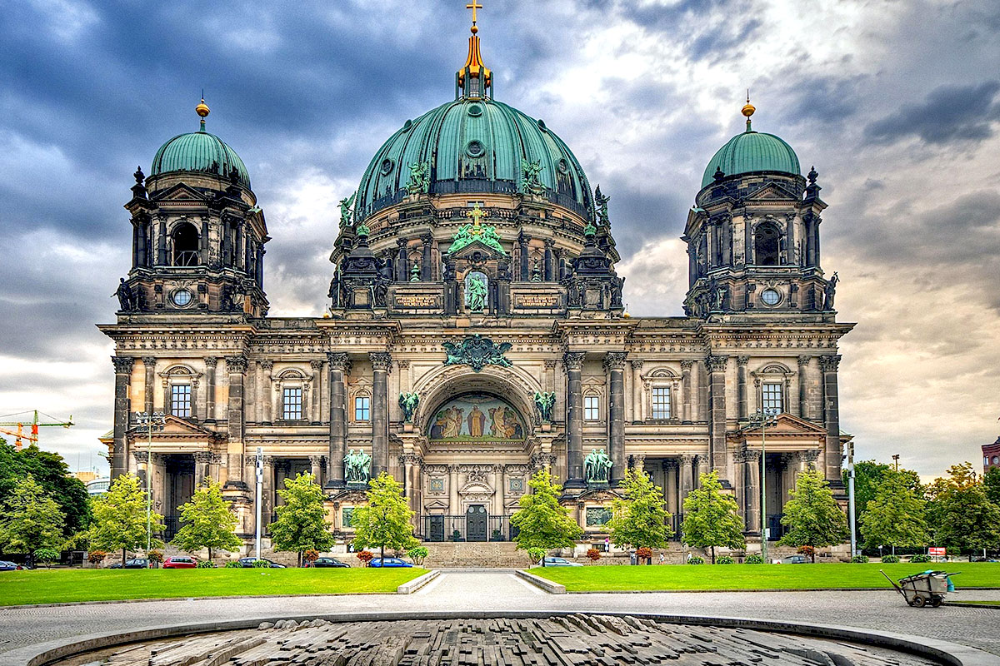
Берлінський кафедральний собор — це пам'ятка є на фотографіях практично всіх туристів, які побували в столиці Німеччини.
Попри протестантські вчення берлінський кафедральний собор вийшов дуже багатим і яскравим, більше схожим на католицьку церкву.
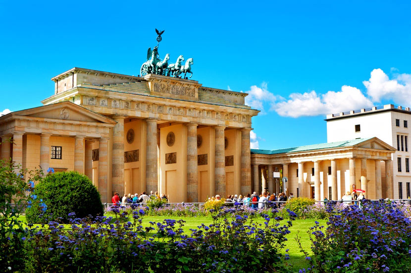
Поїздка до Берліна була б неповною без відвідування його найдраматичнішої пам'ятки — Берлінської стіни.
Мало хто не чув про неї і весь світ радів її падінню. Берлін не тільки столиця країни, але також і центр нічного життя, з безліччю знаменитих пам'яток.
Це красиве історичне місто, і залишки Берлінської стіни нагадають вам про це. Берлін - одна з культурних столиць світу, з безліччю музеїв та галерей.
Не забувайте про ресторани та нічні клуби, і ваша подорож буде незабутньою.
Мюнхен
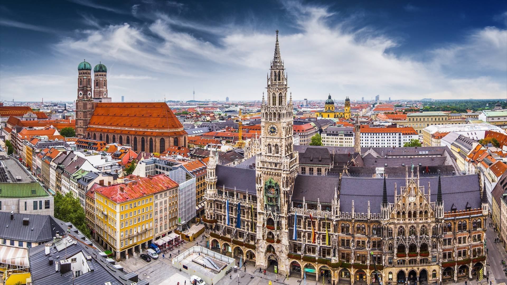
Столиця Баварії поєднує унікальну історію та сучасну європейську атмосферу.
Мюнхен неодмінно справить на вас враження своєю гарною архітектурою.
Деякі будівлі були зруйновані під час Другої світової війни, але тут все ще залишилося безліч чудових пам'яток.
Якщо вам подобається робити покупки, це саме те місто, яке варто відвідати. Звісно, найкраще побувати тут під час відомого фестивалю
Oktoberfest. Мюнхен - найпопулярніший, і одне з найкрасивіших міст Німеччини.
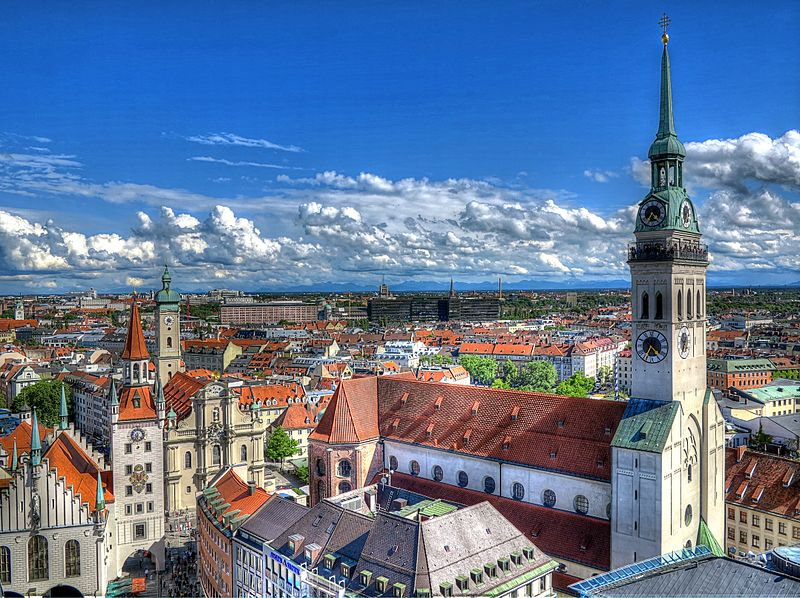
Місце засідань міської влади Мюнхена, Нова ратуша — дивовижний зразок неоготичного архітектурного стилю. Ви неодмінно будете зачаровані величезним 100-метровим фасадом.
Найстаріша церква Мюнхена, освячена на честь святого апостола Петра, Петерскірхе веде свою історію з покритої пеленою часів 1150 року.
Причини, через які кожен мюнхенський турист просто зобов'язаний побачити Петерскірхе, прості та вагомі.
Франкфурт
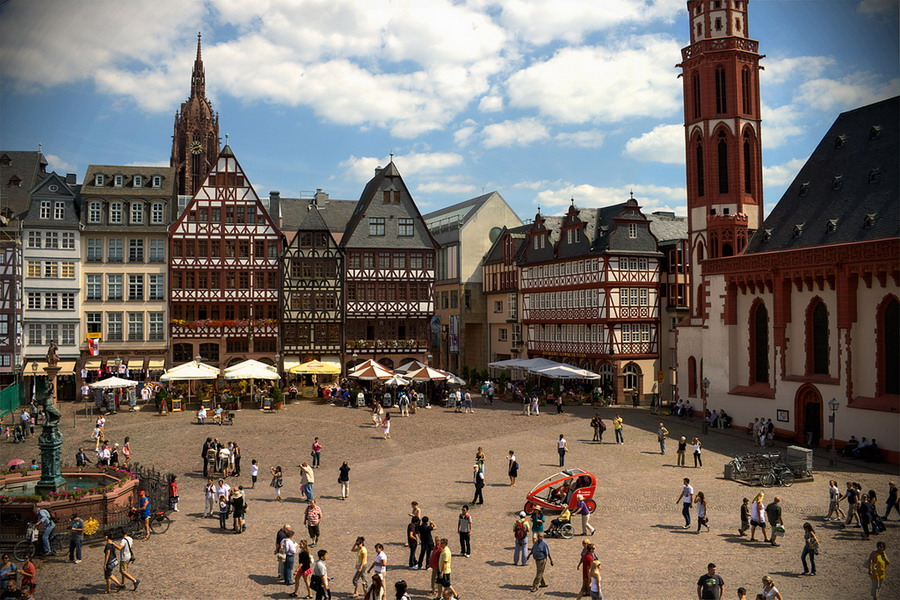
Фінансовий центр Німеччини та Європи є чудовим місцем для туристів.
Розташований на річці Майн, він поєднує футуристичний вид хмарочосів з витонченим та затишним старим центром міста під назвою Ромерберг.
Там ви знайдете багато історичних пам'яток, а якщо втомитеся, то можете завжди випити пива та з'їсти ковбаси.
Важко повірити, що ти перебуваєш у серці Німеччини, розглядаючи велетенський розмір сталевої громади Кварталу банків у Франкфурті.
На думку спадають вулиці Сінгапуру, Токіо чи Нью-Йорка, але ніяк не старовинне німецьке місто, сповнене гарних блакитнооких красунь із традиційним пінним у руках.
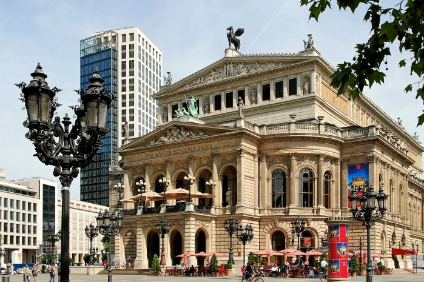
Площа Ремер хоч і не підноситься на 200 м над землею як Квартал банків, але все ж таки вважається найбільш впізнаваним місцем Франкфурта.
Це своєрідна візитна картка міста, архітектурний ландшафт якого легко вгадується на листівках, магнітах, майках та інших сувенірах.
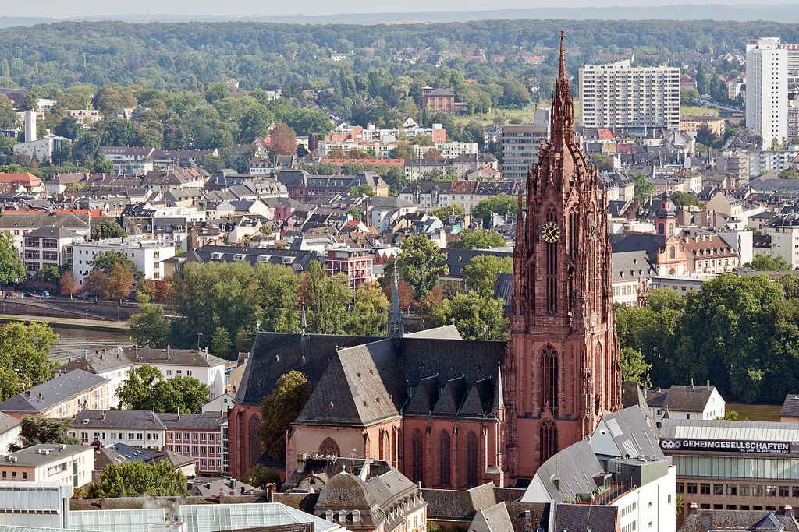
Помпезну наче палац і пишну як весільний торт будівлю Старої опери можна назвати символом Франкфурта-на-Майні.
Історія у цього місця вкрай багата і хвилююча: відпрацювавши майже 60 років, три десятиліття вона пролежала в руїнах, щоб рівно через
101 рік знову відкритися.
Величний Франкфуртський собор, який насправді називається зовсім інакше, але у всіх путівниках і гідів уперто скочується до такого скромного позначення, мабуть, найпомпезніша пам'ятка міста.
Храму так і не вдалося досягти приставки «кафедральний».
Кельн
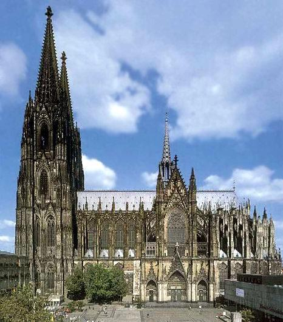
Кельн - найстаріше місто в країні, розташоване по обидва боки річки Рейн. Найвідоміша визначна пам'ятка в місті Кельнський собор.
Якщо у вас є зайва година, підніміться на південну вежу, і ви будете винагороджені чудовим краєвидом.
Потрібно було понад 600 років, щоб побудувати Собор, і це справді вражаюче видовище в одному з найкрасивіших міст Німеччини.
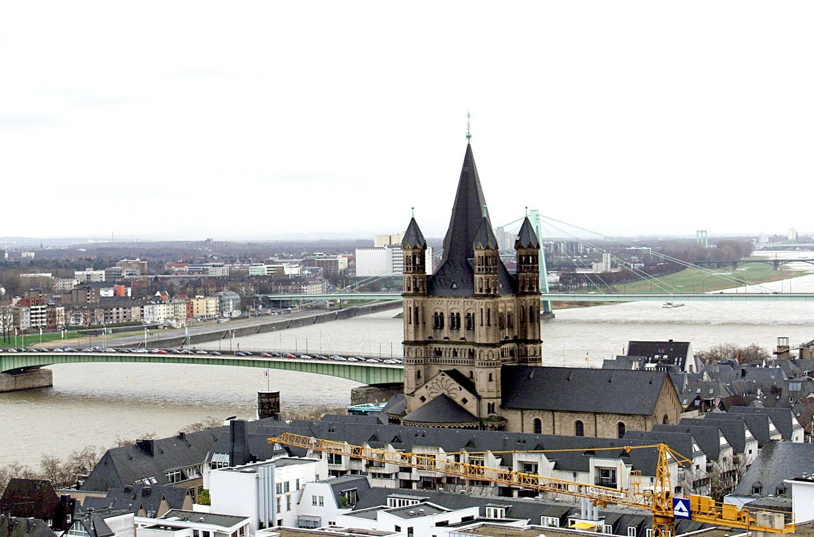
Один із найнезвичайніших храмів Кельна побудований приблизно на тому місці, де колись на Рейні були римські купальні — романська церква Святого Мартіна.
Напрочуд гарна будова, що чудово вписалася в міський архітектурний ансамбль і ландшафт, ця церква була повністю зруйнована під час останньої війни і повністю відновлена до 1960 року.
Гамбург
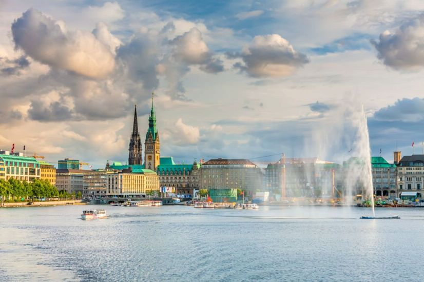
Гамбург - друге за величиною місто в Німеччині, а також найбільший порт. Він розташований на річці Ельбі, змішуючи воєдино середньовічну історію та сучасні види.
Місто називають німецькою брамою у світ і це дійсно відповідне ім'я. Старі будівлі на кшталт Ратуші, Музею Гамбурзької історії та церкви Св. Мікаеліса справді вражають.
Озеро Альстер — настоящая гордость Гамбурга. Сюда, как за отдушиной, стремятся после рабочих будней многие гамбуржцы. Озеро раскинулось в центре мегаполиса на 160 гектаров и полностью окружено парками, деревьями и аллеями.
Дрезден
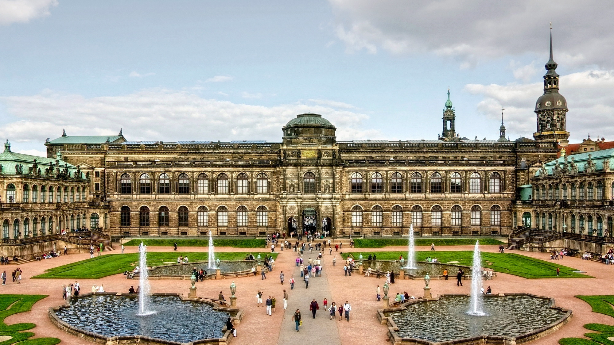
Столиця Саксонії розташована близько до чеського кордону в долині Ельби та має особливу східну чарівність. Найпривабливіше місце для туристів - Альтштадт або Старе місто, досить компактне, щоб дослідити його пішки.
Бароковий палац Цвінгер - важлива пам'ятка, як і Дрезденська опера, або Картинна Галерея. Дрезден дійсно є одним із найкрасивіших міст Німеччини.